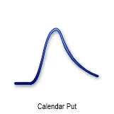
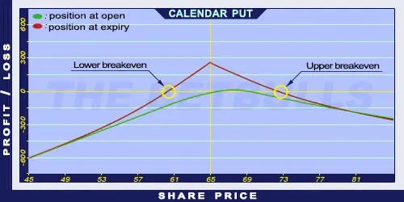

Description and use

A Calendar Put option is a horizontal spread strategy. The two options’ expiration is different and their strike prices are the same. Calendar Put is like Calendar Call but the Call options are replaced by Put options. Therefore, the investments may look similar. The only question is whether trading Calls or Puts result bigger return. The direction of the market is mixed, neutral/increasing. The investor expects constant increase on the market. The investment is characterised by net debit, because the purchased Put options cost more than the sold Put options. It is a safe investment if the Long Put’s expiration is far (back) and the Short Put’s expiration is close (front), usually one month.
- Type: Neutral, Bullish
- Transaction type: Debit
- Maximum profit: Limited
- Maximum loss: Limited
- Strategy: Income strategy
Opening the Position
Calendar Put Option Positions
- Buy a long term Long Put option.
- Sell a short term Short Put option (same strike price as the Long Put’s).
Steps
Entry:
Make sure the trend is ascending or stagnating at a certain level.
Exit:
- When the share closes below the strike price, the Short Put will be exercised automatically. The investor then sells the Long Put option, buys shares on the market, and then resells them on the market again.
- If the share price is above the strike price but above the lower Stop Loss at expiration, then the Short Put option should be left to expire worthless and the received premium should be kept.
- If the share price is above the upper Stop Loss at expiration then the Long Put option should be sold or the trader should start trading in opposite position.
Basic Characteristics
- Maximum loss: Strike price (Put) - Long Put’s maximum value (at first expiration) + net debit.
- Maximum profit: Long Put’s maximum value (at first expiration) - net debit.
- Time decay: Time decay has a mixed effect on the value.
- Lower Breakeven point: At expiry of Short Put, it is the function of the Long Put’s value.
- Upper Breakeven point: At expiry of Short Put, it is the function of the Long Put’s value.
Advantages and Disadvantages
Advantages:
- Income on a monthly basis.
- The potential return is larger than for a Covered Put or a Naked Put strategy.
- The investor can profit from share prices moving within given limits as well.
Disadvantages:
- In case of increasing share prices, it has an upper limit.
- In case of large increase in share prices, it can generate losses.
Closing the Position
Buy back the Short Put option and sell the Long Put option.
Mitigation of losses: Close the position the above-mentioned way.
Example

Calendar Put strategy example
- ABCD is traded for $65.00 on 05.05.2017. The historical volatility is 33%.
- The investor buys a Long Put option which has a strike price of $65.00, expires in January 2006, and costs $9.00 (premium).
- Then the investor sells a Short Put option which has a strike price of $65.00, expires in June 2017, and costs $3.00 (premium).
- Price of the underlying (share price): S= $65.00
- Premium (Short Put): SP= $3.00
- Premium (Long Put): LP= $9.00
- Strike price (Short Put): KS= $65.00
- Strike price (Long Put): KL= $65.00
- Net debit: ND
- Maximum loss: R
- Maximum profit: Pr
- Breakeven point: BEP
Cannot be calculated numerically!